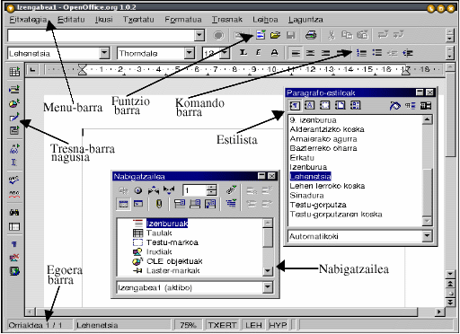

|
||
Edukien aurkibidea
Eskuliburu honetan jakintzat ematen da irakurleak ulertzen dituela Office automatizazioaren aplikazioetan gehien erabiltzen diren hitzak; adibidez, eskuineko eta ezkerreko botoiarekin klik egitea, kurtsorea, laster-leihoa, eta elkarrizketa-koadroaren leihoa. Dokumentu honen helburua OOo Writer-ek nola funtzionatzen duen azaltzea da, testu-dokumentuak sortzeko behar diren prozedura edo atazen adibide errazen bidez. Hemen azaldutako informazio guztia OOo Office Suiteko Microsoft Windows-en bertsioan probatu da; hala ere, kasu askotan, beste plataformetan ere aplika daiteke.
Orain, harremanetan hasiko gara lehenbiziko aldiz Writer-ekin: OOo testu-prozesadorea.
Writer abiarazi ondoren, Windows-en OOo taldean testu-dokumentua hautatuz edo Linux-en soffice script-a exekutatuz, orrialde nagusia ikusi beharko zenuke behean agertzen den moduan:

5 barra daude ikusgai:
Menu-barra : komandoen zerrenda ematen du,
Funtzio-barra: ohiko ekintzetarako ikonoak ditu: ireki, gorde, kopiatu, moztu, itsatsi, etab.
Komando-barra: testuari formatua emateko ikonoak ditu,
Tresna-barra nagusia: idazte-fasean eremuak, formak, irudiak eta bestelako objektuak txertatzeko erabilitako tresna zehatzak ditu,
Egoera-barra informazioa bistaratzen duena: uneko txantiloia, zoomaren portzentajea, txertatze- edo gainidazketa-modua, hautapen-modua eta hiperesteka-modua;
eta bi leiho mugikor:
Estilista. U Klik gutxi batzuk eginez estiloa aldatzeko erabiltzen da, eta
Nabigatzailea. Tresna erabilgarria, batez ere, kapitulu, atal eta irudi askoko dokumentu luzeetarako.
Leiho mugikorrak modu lehenetsian bistaratzen ez badira, zeuk bistara ditzakezu funtzio-barrako Nabigatzailea ikonoan  eta Estilista ikonoan
eta Estilista ikonoan  klik eginez.
klik eginez.
Gogoan izan, dokumentuan edozein hondamendi sortuta ere, beti izango duzula azken bertsioa birkargatzeko aukera Fitxategia menuaren bidez, edo dokumentu zuri bat sortzekoa honakoa eginez:
sakatu KTRL+N teklak,
hautatu Fitxategia-Berria-Testu-dokumentua Menu-barran, Funtzio-barrako Dokumentu berria ikonoan klik eginez.
klik eginez.
Orain, testu-dokumentu bat sortuko dugu.
Beste testu-prozesadoreren bat erabili baduzu, ez duzu arazorik izango OOo Writer-en oinarrizko funtzioak ikasteko. Izan ere, hemengo ekintza eta laster-bide asko beste Office Suitetan ere erabiltzen dira. Testua idazten duzun dokumentu-area marra gris batez definitzen da; testuaren mugen gida. Marjina horiek aldatzeko, honakoa egin behar da:
egin klik Orrialde-estiloa ikonoa  Estilistan,
Estilistan,
hautatu eta egin klik eskuineko botoiarekin Lehenetsia estiloan laster-menua bistaratzeko,
aukeratu Aldatu... laster-menuan, Orrialde-estiloa elkarrizketa-koadroaren leihoa bistaratzeko
ezarri marjinen tamaina Orrialde-estiloa elkarrizketa-koadroko Orrialdea fitxan.
Kontuz: Orrialde-estilo lehenetsia aldatzean, ondoren sortutako dokumentu berri guztiek marjinaren ezarpen lehenetsi berriak izango dituzte. Aldaketak dokumentu bakar batean bakarrik aplikatu nahi badituzu, orrialde-estilo berria sortzea da egokiena aurreko prozedurari jarraituz, baina Berria... hautatuz, goiko 3. urratsean aipatutako laster-menuan. Estilo berri bat sortuko da eta marjina berriak estilo hori orrialde bati aplikatzen diozunean baino ez dira egongo erabilgarri.
Gainera, kontuz ibili dokumentu-arearen marjinak aldatzerakoan, zeren baliteke inprimagailuaren inprimatze-areatik kanpo ezartzea. Hori gertatzen bada, abisu bat agertuko da horren berri emanez.
Zerbait idatziz gero testua non txertatuko litzatekeen erakusten dizu kurtsore keinukariak. Saiatu honelako esaldi bat idazten: Kaixo denoi!
Letra-tipo eta estilo lehenetsian idatziko da. Gehienetan, dokumentuan testu bat idazten duzunean beste testu-zati baten aurretik, lehendik dagoen zatia eskuinera joango da testu berria txertatzean. Bestalde, portaera hori ez da erabilgarria egoera batzuetan. Adibidez, hitz batzuk gainidatzi nahi dituzunean teklatuko ezabatze-tekla erabili gabe, gainidazketa-modura alda zaitezke ezkerreko botoiarekin klik eginez Egoera-barrako TXERT koadroan. Egoera-barran agertutako hitza GAINera aldatuko da. (Txertatu teklak ere modu horiek txandakatuko ditu.) Orain, idazten duzun edozer gauza lehendik dagoen testuan gainidatziko da. Txertatze-modura itzultzeko, egin klik berriro ezkerreko botoiarekin egoera-barrako leku berean. Dokumentu berri bakoitzean, kurtsorea dokumentu-areako goiko ezkerreko izkinan egongo da. Beste lekuren batean idazten hasi nahi baduzu eta oraindik ez baduzu testurik txertatuta, 3 aukera dituzu:
Beharrezkoak ez diren hainbat paragrafo txerta ditzakezu Sartu tekla sakatuz nahi duzun puntura iritsi arte. Konponbide txarra da eta ez da batere profesionala. Esperientzia gutxikoa bazara bakarrik balia zaitezke modu horretaz.
Egin klik Zuzeneko kurtsorea ikonoan Tresna-barra nagusian eta aktibatu funtzio hori. Ikono hori txandakatzailea da; hau da, funtzioak aktibatuta egongo dira desaktibatu arte. Saguaren erakuslea dokumentu hutsaren areara eramaten baduzu, ezkerrean triangelu urdin bat ikusiko duzu. Beste klik bat egiten baduzu, kurtsorea zuzenean triangelua dagoen marrara eta kokalekura (ezkerrera, erdira edo eskuinera) joango da.
Azkenik, Txertatu-Markoa aukera dezakezu Menu-barran, testu-koadroa txertatzeko. Dokumentuan nahi duzuna jartzeko eta ainguratzeko gai izango zara.
Noski, soilik bi hitzetako dokumentuak ez dira oso erabilgarriak. Beraz, idatzi gutxienez 2 edo 3 testu-lerro, teklatuko Sartu sakatuz soilik paragrafo amaieran. Paragrafo bat sortu duzu. Errepikatu ekintza 2 paragrafotako dokumentua sortzeko. Orain agian, idatzitako testuaren zati bat hautatu nahi duzu han ekintza batzuk burutzeko. Hautapena testu-nabarmentzearen modu berezi bat da burutuko duzun ekintza jakin bat testuaren zein zatitan aplikatuko den zehaztuko duena. Normalean, hautatutako testua letra zuritan bistaratzen da atzeko plano beltzean. Ondorengo modutara egin dezakezu hautapena:
hautatu hitz bakar bat ezkerreko botoiarekin klik bikoitza eginez.
hautatu lerro bat hiru aldiz klik eginez lerroan.
hautatu hainbat lerro ezkerreko botoiarekin klik eginez hautatu nahi duzun testu-zatiaren hasieran eta sagua arrastatuz, botoia askatu gabe, hautatu nahi duzun azken hitzera iritsi arte.
hautatu jarraian ez dauden testu-zatiak. Lehenengo testu-zatia hautatzen dugu eta, Ktrl tekla sakatuta dugula, beste zati bat hautatzen dugu.
hautatu testu guztia KTRL+A teklak sakatuz.
Aholkua: hautapen-funtzioa Bilatu funtzioarekin batera erabil dezakezu. Bilatu funtzioari KTRL+F teklak sakatuz dei diezaiokezu edo Tresna-barra nagusiko Bilatzea aktibatu/desaktibatu ikonoa  sakatuz. Agertuko den elkarrizketa-koadroaren leihoko 'Bilatu:' konbinazio-koadroan, dokumentuan bilatu nahi duzun hitza txerta dezakezu. Elkarrizketa-koadroko Bilatu denak botoian klik eginez gero, hitz hori dokumentuan agertzen den kasu guztietan bilatuko du, nahi duzun formateatze- edo editatze-ekintza burutu dezazun. Jarri arreta non egiten duzun klik fokua Bilatu elkarrizketa-koadrotik dokumentu nagusiko leihora eramateko. Dokumentu-arearen barruan klik egiten baduzu, hautatutako hitz guztiak hautatuta geratuko dira, bilaketa errepikatzera behartuz. Efektu hori saihets dezakezu leiho nagusiko titulu-barran edonon klik eginez (dokumentuaren titulua bistaratzen duen goiko lehenengo barra).
sakatuz. Agertuko den elkarrizketa-koadroaren leihoko 'Bilatu:' konbinazio-koadroan, dokumentuan bilatu nahi duzun hitza txerta dezakezu. Elkarrizketa-koadroko Bilatu denak botoian klik eginez gero, hitz hori dokumentuan agertzen den kasu guztietan bilatuko du, nahi duzun formateatze- edo editatze-ekintza burutu dezazun. Jarri arreta non egiten duzun klik fokua Bilatu elkarrizketa-koadrotik dokumentu nagusiko leihora eramateko. Dokumentu-arearen barruan klik egiten baduzu, hautatutako hitz guztiak hautatuta geratuko dira, bilaketa errepikatzera behartuz. Efektu hori saihets dezakezu leiho nagusiko titulu-barran edonon klik eginez (dokumentuaren titulua bistaratzen duen goiko lehenengo barra).
Hautatutako testu batean lau ekintza nagusi burutu ditzakezu: kopiatu, moztu, ezabatu eta formatua eman. Hautatutako testu-zati bat arbelean kopiatu nahi baduzu, sakatu KTRL+C. Bestela, moztu nahi baduzu eta arbelean kopiatu, sakatu KTRL+X. Testua arbeletik berriro dokumentuan itsats dezakezu KTRL+V sakatuz. Laster-bide horiek estandarrak dira eta Funtzio-barran ere badute ikonoa.
Hautatutako testuetan ezabatze-ekintza burutzea beste Office Suitetan ere oso ohikoa da: ezabatze-tekla sakatzea, zuriune-barra erabiltzea edo hautapenean zerbait gainidaztea nahikoa da. Bestalde, formateatze-ekintza OOo-en orain arte ezagutzen dugunaren bestelakoa da. Writer-en testuari formatua emateko bi modu daude:
Komando-barrako edo Formatu-barrako tresnak erabiltzea,
Estilista erabiltzea (ikus hurrengo atala).
Oraingoz, 1. puntua aztertuko dugu.
Hautatutako testua aldatzen has zaitezke estilo-atributuak aldatuz. Aldatu nahi duzuna hautatu ondoren, egin klik Komando-barrako atributuak ikonoetako batean . Hautatutako testua (ezkerretik eskuinerako ordenan) letra lodi, etzan eta azpimarratu bihurtzen du. Laster-bideak ere erabil daitezke emaitza bera lortzeko:
KTRL+L letra lodirako,
KTRL+E letra etzanerako,
KTRL+A azpimarratua atributurako.
Testu-atributuak modu zehatzagoan hautatzeko, aukeratu Formatua-Karakterea... edo Formatua-Paragrafoa... Menu-barran, aldatu nahi duzun testu-zatiaren arabera. OOo-en lerrokatzeak eta aurreko planoa, edo testuaren atzeko planoaren kolorea aldatzeko aukerak dituzu:
egin klik Komando-barrako lerrokatze-ikonoetako batean testuaren lerrokatzea aldatzeko (ezkerrean, erdian, eskuinean edo justifikatua);
testuaren lerrokatzea aldatzeko (ezkerrean, erdian, eskuinean edo justifikatua);
Egin klik Komando-barrako kolore-ikonoetako batean eta eduki sakatuta kolore-paleta bistaratzeko, han nahi dituzun koloreak hauta ditzazun.
Aholkua: kolore-paleta leiho mugikor bihur dezakezu; hain zuzen, leiho hori goiko eskuineko izkinan duen Itxi botoian klik egin arte irekita egongo da. Ekintza hori burutzeko, errepikatu goian azaldutako prozeduraren 2. urratsa, egin klik eta eduki sakatuta saguaren ezkerreko botoia kolore-paleta leihoaren titulu-barran eta, ondoren, arrastatu sagua dokumentu-areako lekuren batera, eta, azkenik, askatu saguaren botoia. Portaera hori ohikoa da Tresna-barra nagusiko beste laster-leihoetan.
Orain arte adierazitako prozedura guztiak exekutatu badituzu, testuko atributu nagusiak nola idazten eta aldatzen diren ikasiko zenuen. Bestalde, batzuetan dokumentuek itxura berri baten premia izaten dute. Horretarako, letra-tipo eta tamaina berriak erabil ditzakezu atributuekin batera, dokumentuaren atal berezi bat nabarmentzeko; adibidez, izenburuak, komatxoak, iruzkinak, etab.
Normalean, dokumentu berri baten letra-tipo lehenetsia "Thorndale" edo "New Times Roman" da. Gerta liteke letra-tipo horiek sisteman ez edukitzea edo ez gustatzea. Letra-tipo lehenetsia aldatzeko, aukeratu Tresnak-Aukerak Menu-barran eta agertuko den Aukerak elkarrizketa-koadroaren leihoan arakatu Testua Dokumentua-Oinarrizko letra-tipoak (Western) arte. Hor, letra-tipo lehenetsiak, izenburuak, zerrendak, epigrafeak eta indizeak alda ditzakezu. Zoritxarrez, konponbide hori oso erradikala da, sortzen duzun dokumentu guztietako letra-tipoak aldatuko baititu. Beste aukera bat eta emaitza bera lortzeko modu egokiago bat Komando-barrako goitik behera jaisten den Aldatu letra-tipoa eta tamaina zerrenda erabiltzea da.
Lehenengo zerrendak sisteman erabilgarri dituzun letra-tipo guztien aurrebista bistaratzen du. Zerrenda osoa ikusteko, egin klik konbinazio-koadroaren eskuineko botoi txikian, gezia duen botoian. Bigarrenak, letra-tipoen luzera bistaratzen du puntu bidez adierazita. Hautatu hitz bat edo testu-zati bat, eta saiatu haren letra-tipoa eta tamaina aldatzen. Goian esan bezala, izenburu eta bestelako testu-formatu bereziak sortzeko modurik onena da.
Linux-erabiltzaileentzat soilik: OOo-ek zure sisteman dauden TrueType letra-tipoak erabil ditzake, baina beste aplikazioetatik gehitu nahi dituzun bestelako letra-tipoak erabiltzeko ere gai da. Exekutatu erro gisa, spadmin script-a OOo-eko instalazio-direktorioan topa dezakezu. Tresna horren bidez, letra-tipo berriak gehi ditzakezu, eta geroago, inprimagailuak.
Demagun idazlan luze bat idatzi duzula atal ugarikoa eta hainbat estilotako izenburuak dituena, eta arratsaldeko 4:55etan nagusia etortzen zaizu eta honakoa esaten dizu: "Nahiago dut Arial, Verdana-ren ordez, izenburuko letra-tipoaren estilo gisa eta Georgia, Times New Roman-en ordez testu normalerako. Mesedez, alda ezazu etxera joan aurretik..." Bai, 5 minutu dituzu dozenaka izenburu eta paragrafo aldatzeko!
Ikaragarrizko amesgaiztoa izango litzateke, testua OOo Office Suiten idatzi ez bazenu. Izan ere, Writer-en Estilista tresna erabil dezakezu aldaketak azkarrago egiteko!
Behean agertutako Estilista leiho mugikorra lehenespenez bistaratu beharko litzateke dokumentu berri bat irekitzean.

Ez bada bistaratu, egin klik funtzio-barrako Estilista ikonoan  .
.
Dagoeneko erabili dugu Orrialde-estilo berri bat sortzeko 1. atalean. Orain, haren erabileraren inguruan gehiago ikasiko dugu.
Estilista leihoan tresna-barra bat dago titulu-barraren azpian eta han 5 ikono daude ezkerrean hainbat estiloren artean txandakatzeko: Paragrafoa, Karakterea, Markoa, Orrialdea, eta Numerazio-estiloak; eta beste 3 ikono eskuinean Estilistaren funtzio jakin batzuetara sartzeko: Formatua emateko modua, Estilo berria hautapenetik,eta Eguneratu estiloa. Barra horren azpian, taula bat dago eta han erabilgarri dauden estilo guztien zerrenda. Azkenik, behean, konbinazio-koadro batean iragazkiak aukera ditzakezu estiloak, zati bat bakarrik, bistaratzeko aukeratutako iragazkiaren arabera. Adibidez, 'Kapitulu-estiloak' 'Estilo guztiak' aukeraren ordez, baita 'Automatikoa' ere.
Ikuspegi orokor eta labur horren ondoren, atalaren hasieran aipatutako adibideetara itzul gaitezke. Nola alda ditzakezu izenburu eta paragrafo horiek guztiak 5 minututan? Static estiloa erabili baduzu 2. atalean erakusten den bezala, ia ezinezkoa izango da. Metodo hori erabilgarria da soilik izenburu edo hitz bati edo biri eman behar diozunean formatua, ez gehiagori. Estilista estiloekin, berriz, ("estilo dinamikoak" ere deitua), hainbat testu-atal alda ditzakezu, baita liburu oso bat ere klik gutxi batzuk eginez. Ikus dezagun nola funtzionatzen duen:
Egin klik lehenengo ikonoan, "Paragrafo-estiloak" izenekoan, paragrafoekin lotutako estilo guztiak bistaratzeko. Zenbait estilo erabiltzeko prest daudela ohartuko zara.
Idatzi duzun testu bati haiek aplikatzeko, honako aukeren artean aukera dezakezu:
estiloa aplikatu nahi diozun testua hautatzea, gero klik bikoitza egitea Estilistako estilo batean, eta estilo hori zuzenean aplikatuko da
klik behin egitea Estilistako estilo batean eta gero berriro klik egitea Formatua emateko modua ikonoan  . Tresna hori hautatuta geratuko da zuk desautatu arte. Kurtsorea testura griseko marra bertikal keinukari bihurtuko da eta saguaren erakuslea pintura-ontzi. Paragrafo edo izenburu baten barruan klik egiten duzunean, paragrafo edo izenburu horren testu guztia aldatuko da.
. Tresna hori hautatuta geratuko da zuk desautatu arte. Kurtsorea testura griseko marra bertikal keinukari bihurtuko da eta saguaren erakuslea pintura-ontzi. Paragrafo edo izenburu baten barruan klik egiten duzunean, paragrafo edo izenburu horren testu guztia aldatuko da.
Erraza da ulertzea estiloak erabilitako idazlan bat erraza dela aldatzea Estilistan erabiltzeko prest dauden beste estiloekin. Noski OOo-en garatzaileek ezin dituzte mundu osoko nagusi guztien nahi guztiak ezagutu; horregatik dago lehendik dauden estiloak aldatzeko edo pertsonalizatzeko funtzio praktiko bat.
Estilo bat aldatzeko, jarraitu ondorengo urratsei:
Ziurtatu Paragrafo-estiloak hautatuta dagoela, ondoren aukeratu nahi duzun estiloa ezkerreko botoiarekin klik behin eginez. Nabarmendu egingo da.
Ondoren, egin klik eskuineko botoiarekin laster-menurako hautatutako estiloan eta aukeratu Aldatu...
Elkarrizketa-koadroaren leihoan nahi dituzun atributuak alda ditzakezu.
Egin klik Ados botoian, zure aukera berresteko edo Utzi botoian, aldaketarik egin gabe ixteko.
Aholkua: zuzenean dokumentuan aldatu baduzu estiloren bat (letra-tipo, kolore, tamaina eta abar berri bat aplikatuz) dagokion estiloa egunera dezakezu Estilistan, hala estilo hori duten atal guztiak automatikoki egunera daitezen. Horretarako, egin hurrengoa:
hautatu aldatutako testua eta egin klik Eguneratu estiloa ikonoan  Estilistan
Estilistan
edo, bestela,
arrastatu hautatutako testua eta jaregin Estilistako estilo batean. Automatikoki eguneratuko da.
Estilo berri bat sortzeko, egin hurrengoa:
errepikatu goian aipatutako 1. urratsa. Gogoratu estilo berriak hautatutako estiloaren ezaugarriak hartuko dituela; beraz kontuz ibili hura aukeratzerakoan,
egin klik eskuineko botoiarekin hautatutako estiloan, laster-menua bistaratzeko, eta, ondoren, aukeratu Berria...
idatzi estilo berriarentzat izena, agertuko den Paragrafo-estiloa elkarrizketa-koadroaren leihoko Antolatzailea fitxan,
hautatu dokumentuan ondoren izango duzun estiloaren, sortu berriaren, izena. Lehenespenez, paragrafo-estilo baten ondoren estilo horren izena dator, baina kasu batzuetan, lan egiteko modua alda dezakezu nahi izanez gero. Adibidez, izenburuko paragrafo bat idatzi ondoren, nahiago duzu testu-paragrafo soil bat edo beheko izenburu-estiloa edukitzea. Leihoan estilo hori hautatzen baduzu, Sartu tekla sakatu bezain laster automatikoki hautatuko da. Denbora aurrezteko modu ona da!
Egin letra-tipo, tabulazio, aurreko planoaren eta atzeko planoaren kolore eta abarretan egin behar dituzun bestelako aldaketak.
berretsi zure aukera Ados botoia sakatuz elkarrizketa-koadroa ixteko.
Aholkua: estilo berri bat sortzeko oso modu azkarra honakoa da:
estilo berrian nahi dituzun aldaketa guztiak dokumentuan dagoeneko idatzita duzun testu-zatiari aplikatzea,
hautatzea nabarmenduz,
klik egin Estilistako Estilo berria hautapenetik ikonoan , eta izena idaztea estilo berriarentzat agertuko den Estilo berria elkarrizketa-koadroan.
, eta izena idaztea estilo berriarentzat agertuko den Estilo berria elkarrizketa-koadroan.
Amaitzeko, zure idazlana prest egongo da 5 minututan, baldin eta
paragrafoetako eta izenburuetako letra-tipoak lehen azaldu bezala Estilistan aplikatutako estiloak aldatuz aldatzen dituzun. Estilo berarekin formatua emandako paragrafo eta izenburu guztiak automatikoki eguneratuko dira!
Aldaketa gehiago egin beharko balira, eta gero nagusi handiuste gehiagorenak, estilo berri bat sor dezakezu, eta ondoren behar duzun lekuan aplikatu Formatua emateko moduaren bidez.
Irekitzea, gordetzea eta inprimatzea testu-prozesadore bateko ekintza ohikoenak dira, eta gainera errazak izan behar dute eta eskura egon behar dute. OOo Office suitek hainbat aukera ematen dizkizu.
Dokumentu-fitxategi bat ireki nahi duzunean, honakoa egin dezakezu:
sakatu KTRL+O teklak,
hautatu Fitxategia-Ireki Menu-barran,
egin klik Funtzio-barrako Ireki fitxategia ikonoan  .
.
Edozein aukeratuta ere, Ireki fitxategia elkarrizketa-koadroaren leihoa bistaratuko da. Han ireki nahi duzun dokumentu-fitxategira arte araka dezakezu.
Aholkua: Goian aipatutako ekintzak baliozkoak dira soilik OOo-eko testu-dokumentuaren leihoa irekita dagoenean. Bestalde, denbora-galtze bat izango litzateke dokumentu zuri bat irekitzea soilik beste fitxategi bat irekitzeko; beraz, Windows OOo-ek "Abiarazte bizkor" bat inplementatu du. Zure programarekin batera abiarazten den programa da eta pantailaren beheko eskuineko izkinan agertuko den tximeleta-ikonoaren bidez atzi daiteke. Egin klik bikoitza han, eta Txantiloiak eta dokumentuak elkarrizketa-koadroaren leihoa agertuko da. Han, dokumentu bat hauta dezakezu eta zuzenean ireki. Eskuineko botoiarekin ikono berean klik egiten baduzu, Ireki fitxategia leihoa agertuko da estilo sinpleagoan.
Bestalde, dokumentu bat gorde nahi baduzu, honakoa egin behar duzu:
sakatu KTRL+S teklak,
aukeratu Fitxategia-Gorde Menu-barran,
egin klik Funtzio-barrako Gorde ikonoan .
.
Hemen ere, edozein aukeratuta ere, Gorde fitxategia elkarrizketa-koadroaren leihoa bistaratuko da.
Kontuz: dokumentua azkena gorde zenuenetik aldatu ez bada, gorde ikonoa grisez egongo da  eta ezingo duzu berriro gorde, baldin eta ez baduzu Gorde honela.. komandoa erabiltzen.
eta ezingo duzu berriro gorde, baldin eta ez baduzu Gorde honela.. komandoa erabiltzen.
Orain, dokumentuak nola inprimatzen diren azalduko dugu.
Eskuliburu hau Windows sistema eragilean probatu denez, ondoren Windows-en inprimatze-sistemaren eta OOo-en arteko interakzioa deskribatuko da. Linux-en edo Solaris-en erabiltzailea bazara, begiratu zure inprimagailu-kontrolatzailearen sisteman, jakiteko nola gehitzen den inprimagailu bat eta nola erabiltzen den OOo-ekin; hala ere, OOo-en barneko elkarrizketa-koadro asko berdinak dira plataforma guztietan.
Inprimatu aurretik, inprimagailu lehenetsia ezarri behar duzu. Aukeratu Fitxategia-Inprimagailuaren ezarpenak... Menu-barran. Bistaratuko den Inprimagailuaren ezarpenak elkarrizketa-koadroaren leihoan, zure inprimagailu lehenetsia agertu beharko litzateke "Izena" izeneko konbinazio-koadroan. Instalatuta ez badago, OOo Suiten kanpotik ezarri behar duzu, zure sistemaren inprimatze-tresnen bidez. Inprimagailuaren zenbait propietate alda ditzakezu 'Propietateak' botoian klik eginez. Lehenengo fase hori egin ondoren, zure inprimagailua erabilgarri egongo da, aukeratutako ezarpenekin, OOo-eko aplikazio guztietarako.
Inprimagailuaren ezarpenak egiaztatu ondoren, inprimatzeko prest egongo zara; hala ere, inprimatu aurretik dokumentuak inprimatzean zein itxura izango duen egiaztatzea ohitura ona da. Horretarako, Writer-ek 'Orrialdearen aurrebista' ezaugarria eskaintzen dizu. Hautatu Fitxategia-Orrialdearen aurrebista menu-barran Orrialdearen aurrebista modura joateko. Modu horretan dokumentua inprimatuko den bezala ikusiko duzu, baina "orrialdez orrialdeko" ikuspegia eskainiz. 4 orrialde ere ikus ditzakezu aldi berean. Horretarako, egin klik dokumentuaren gainean agertuko den aldatutako Objektu-barrako Orrialdearen aurrebista: Lau orrialde ikonoan . Aurrebistaren eskala ikonoaz baliatuz
. Aurrebistaren eskala ikonoaz baliatuz  handitu eta txikiago dezakezu. Orrialdearen aurrebista modua garrantzitsua da, ez dokumentuaren itxura ikusteko bakarrik, baita orria aurrezteko ere, eta beraz, zuhaitz gehiago edukitzeko! Hain zuzen, badago Inprimatu aurrebista ezaugarria
handitu eta txikiago dezakezu. Orrialdearen aurrebista modua garrantzitsua da, ez dokumentuaren itxura ikusteko bakarrik, baita orria aurrezteko ere, eta beraz, zuhaitz gehiago edukitzeko! Hain zuzen, badago Inprimatu aurrebista ezaugarria  , eta horri esker Aurrebista-moduan ikusten ari zaren horixe inprima dezakezu; hau da, 2 edo 4 orrialde aldi berean. Dokumentuaren aurrebista ikusi ondoren, zuzenean inprima dezakezu Inprimatu fitxategia zuzenean ikonoan klik eginez
, eta horri esker Aurrebista-moduan ikusten ari zaren horixe inprima dezakezu; hau da, 2 edo 4 orrialde aldi berean. Dokumentuaren aurrebista ikusi ondoren, zuzenean inprima dezakezu Inprimatu fitxategia zuzenean ikonoan klik eginez  , itxi Orrialdearen aurrebista modua Objektu-barran bistaratutako Orrialdearen ikuspegia ikonoa desautatuz
, itxi Orrialdearen aurrebista modua Objektu-barran bistaratutako Orrialdearen ikuspegia ikonoa desautatuz  , edo editatzen ari den orrialdera itzuli eta klik bikoitza eginez aurrebistan agertzen den orrialdean.
, edo editatzen ari den orrialdera itzuli eta klik bikoitza eginez aurrebistan agertzen den orrialdean.
Nahi izanez gero, oraindik inprimatze-ezaugarri batzuk alda ditzakezu dokumentua inprimatu aurretik. Horretarako, egin honakoa:
sakatu KTRL+P teklatuan,
edo
hautatu Fitxategia-Inprimatu Menu-barran.
Inprimagailua elkarrizketa-koadroaren leihoa agertuko da, eta han dokumentuaren zenbat kopia inprimatu nahi dituzun aukeratu dezakezu, zein orri nahi dituzun, zein irteera izango duen (inprimagailua edo fitxategia), eta leihoaren ezkerreko 'Aukerak...' botoiaren bidez ikusiko dituzun beste hainbat propietate. Leiho horretako Ados botoia sakatzen duzunean, dokumentua aukeratu duzun inprimagailura edo fitxategira bidaliko da.
Egilea : Gianluca Turconi
Eskerrak : Richard Holt, proba-zuzentzailea eta OOo-eko laguntzailea
Integrazioa : E/E
Azken aldaketa: 2002ko otsailaren 10a
Kontaktuak : OpenOffice.org dokumentazio-proiektua http://whiteboard.openoffice.org/doc/index.html
Itzulpena : E/E
|
|
||